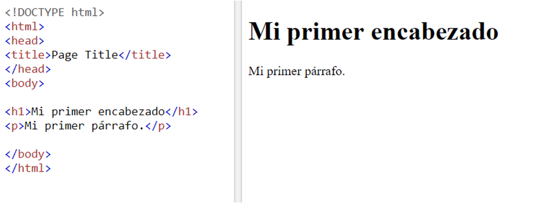

¿Qué es HTML?
HTML (Hyper Text Markup Language) es un leguaje de marcado; es decir, es un lenguaje que incorpora etiquetas que contienen información acerca de la estructura o presentación del texto, en este caso, texto en páginas web. Los navegadores (como Google Chrome, Firefox, entre otros) interpretan las etiquetas del documento html y le dan formato para obtener una mejor presentación al texto. Estas etiquetas se identifican mediante '< >' para abrir la etiqueta y con '</ >' se cierran.
Para crear un documento html se necesitan las siguientes etiquetas:
- <!DOCTYPE html> al inicio del archivo de texto
- < html > es el elemento raíz de un HTML
- < head > es donde se ponen los datos de la página web
- < title > indica el título que se despliega en la pestaña del navegador < /title >
- < /head > se cierra la sección head
- < body > aquí se despliega el contenido principal de la página
- < h1 > define un encabezado
- < p > define un párrafo
- < /body > se cierra la sección body
- < /html > se cierra el documento html
A continuación se muestra un ejemplo de una página simple. En la parte izquierda se muestra el código y en la parte derecha se observa cómo lo despliega el navegador.
Como se puede observar, solamente se despliega la información que aparece en la sección de body.
¿Qué se necesita?
Lo único necesario para crear y modificar una página web es un editor de texto, ya sea uno sencillo (como el bloc de notas) o uno especializado para HTML. Una vez escrito el código de HTML es el editor hay que guardar el archivo con terminación .html, por ejemplo: paginaWeb.html
- A pesar de que hay algunos elementos de html que su etiqueta de cierre es opcional, es importante cerrarlas todas, ya que los exploradores pueden mostrar resultados distintos el deseado.
- Aunque al escribir las etiquetas las mayúsculas o minúsculas no influyan es preferible escribirlas con minúsculas.